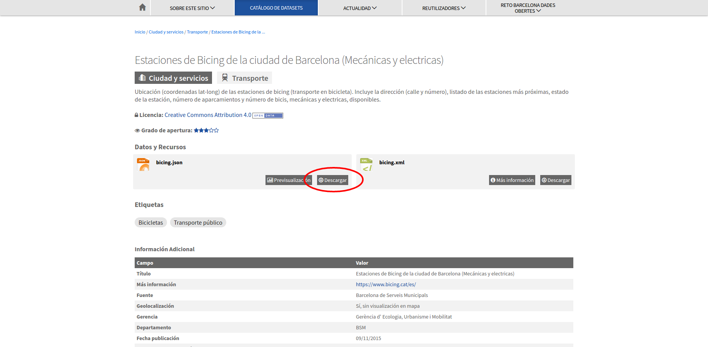

Ejemplo servicio bicing Barcelona VectorTiles
Acceso al servicio de datos del Bicing de Barcelona
En el portal Open data del Ayuntamiento de Barcelona podemos encontrar un dataset (conjunto de datos) que contiene las estaciones del servicio de Bicing
Si bien el Ayuntamiento de Barcelona no ofrece explicitamente el acceso a los datos del Bicing como un servicio, si que tiene un servicio de datos en tiempo real. La url la podemos encontrar presionando el botón de Descargar del recurso bicing.json
 url servicio de bicing
Al abrir la url http://wservice.viabicing.cat/v2/stations en nuestro navegador observaremos que la respuesta es un archivo json con un conjunto de elementos que tienen las coordenadas de la localización de la estación de bicing, la disponibilidad de bicis, las estaciones más cercanas, etc.
Mapa que utiliza este servicio, Ejemplo creado en la plataforma Instamaps
El archivo json que retorna el servicio tiene coordenadas pero no es un fichero GeoJSON. 1
Para ver estos datos sobre un mapa crearemos un visor utilizando Mapbox GL JS. 2
Creación de un visor
- Crer una carpeta con el nombre de visor-bicing-vt.
- Crear un archivo con el nombre de index.html dentro de la carpeta
- Abrir el archivo index.html con un editor de texto y copiar el siguiente código.
1 2 3 4 5 6 7 8 9 10 11 12 13 14 15 16 17 18 19 20 21 22 23 24 25 26 27 28 29 30 31 32 33 34 35 36 37 | <!DOCTYPE html> <html> <head> <title>Servicio de Bicing realtime VectorTiles</title> <meta name='viewport' content='initial-scale=1,maximum-scale=1,user-scalable=no' /> <script src='https://api.tiles.mapbox.com/mapbox-gl-js/v0.51.0/mapbox-gl.js'></script> <link href='https://api.tiles.mapbox.com/mapbox-gl-js/v0.51.0/mapbox-gl.css' rel='stylesheet' /> <style> body { margin: 0; padding: 0; } #map { position: absolute; top: 0; bottom: 0; width: 100%; height: 100% } </style> </head> <body> <div id="map"></div> <script type="text/javascript"> var map = new mapboxgl.Map({ container: 'map', style: 'https://geoserveis.icgc.cat/contextmaps/icgc.json', center: [2.1777, 41.3887], zoom: 13, maxZoom: 14, hash: true, }); </script> </body> </html> |
- Abrir el archivo index.html en el navegador para ver que carga un mapa centrado en Barcelona.
Creación del proxy
- Instalar Node.js 3. Descargar la última versión LTS (en este momento es la 10.13.0 LTS) y lo instalaremos con las opciones por defecto. Una vez instalado el Node abrir la consola para verificar que se ha instalado correctamente. Escribir
1 | node -v |
- Navegar hasta nuestra carpeta visor-bicing-vt y escribir:
1 | npm init |
Con este comando estaremos creando el archivo package.json. Este comando solicita varios elementos como, por ejemplo, el nombre y la versión de la aplicación. Por ahora, sólo hay que pulsar ENTER para aceptar los valores predeterminados.
-
Instalar las dependencias para crear nuestro servicio de proxy 4. En este caso utilizaremos Express 5 como servidor web y el módulo axios 6.
-
Instalar el express y guardarlo en la lista de dependencias
1 | npm install express --save |
- Instalar el axios y guardarlo en la lista de dependencias
1 | npm install axios --save |
Al ejecutar estos comandos veremos que se crea una carpeta llamada node_modules donde se guardan los módulos instalados.
- Crear un archivo llamado app.js que servirá de proxy con el servicio de Bicing. Copiar lo siguiente en este archivo.
1 2 3 4 5 6 7 8 9 10 11 12 13 14 15 16 17 18 19 20 21 22 23 24 25 26 27 28 29 30 31 32 33 34 35 36 37 38 39 40 41 42 43 44 45 | var express = require('express'); var app = express(); var serverBicing = 'http://wservice.viabicing.cat/v2/stations'; app.use(express.static('public')); app.all("/bicingjson/*", function(req, res) { console.log('redirecting to Server2'); var geojson = { type: 'FeatureCollection', features: [] }; axios.get(serverBicing).then(function(response){ // handle success var stations = response.data.stations; for (var i = stations.length - 1; i >= 0; i--) { var station = stations[i]; var feature = { type: 'Feature', properties: { altitude: station.altitude, bikes: station.bikes, id: station.id, nearbyStations: station.nearbyStations, slots: station.slots, status: station.status, streetName: station.streetName, streetNumber: station.streetNumber, type: station.type }, geometry: { type: 'Point', coordinates: [station.longitude, station.latitude] } }; geojson.features.push(feature); } res.send(geojson); }).catch(function (error) { console.log(error); res.send(error); }); }); app.listen(3000); |
- Probar que nuestro proxy está funcionando, escribiendo:
1 | node app.js |
-
Abrir la url de nuestro proxy http://localhost:3000/bicingjson/ en el navegador.
-
Crear una carpeta llamada public dentro de nuestra carpeta y mover el archivo index.html dentro de esa carpeta. Con esto ya podemos ver nuestra aplicación del mapa servida desde un servidor web y no abriendola directamente como habíamos hecho hasta ahora.
-
Escribir en el navegador http://localhost:3000 para ver nuestro mapa.
Modificar el visor
- Modificar el archivo index.html para que llame al proxy que hemos creado y cargue la capa de bicing. Escribir justo despues de la declaración del mapa.
1 2 3 4 5 6 7 8 9 10 11 12 13 14 15 16 17 18 19 20 21 22 23 24 25 26 27 28 29 30 31 32 33 34 35 36 37 38 39 40 41 42 43 44 45 46 47 48 49 50 51 52 53 54 55 56 57 58 | <!DOCTYPE html> <html> <head> <title>Servicio de Bicing realtime VectorTiles</title> <meta name='viewport' content='initial-scale=1,maximum-scale=1,user-scalable=no' /> <script src='https://api.tiles.mapbox.com/mapbox-gl-js/v0.51.0/mapbox-gl.js'></script> <link href='https://api.tiles.mapbox.com/mapbox-gl-js/v0.51.0/mapbox-gl.css' rel='stylesheet' /> <style> body { margin: 0; padding: 0; } #map { position: absolute; top: 0; bottom: 0; width: 100%; height: 100% } </style> </head> <body> <div id="map"></div> <script type="text/javascript"> var map = new mapboxgl.Map({ container: 'map', style: 'https://geoserveis.icgc.cat/contextmaps/icgc.json', center: [2.1777, 41.3887], zoom: 13, maxZoom: 14, hash: true, }); map.on("load", function() { //funcion que se llama al terminar de cargar el estilo del mapa //agregamos la fuente de datos al mapa map.addSource('bicing-source', { type: 'geojson', data: 'http://localhost:3000/bicingjson/' }); //agregamos la capa con su estilo al mapa map.addLayer({ "id": "bicing", "type": "circle", "source": "bicing-source", "paint": { "circle-radius": 6, "circle-color": "#B42222" }, }); }); </script> </body> </html> |
-
Recargar la aplicación y veremos los puntos de las estaciones de bicing.
-
Actualizar los datos del mapa. Para actualizar los datos del mapa se debe recargar la capa de estaciones de bicing cada X tiempo. Para recargar la capa cada 3 segundos escribir los siguiente al final de la función que se llama al terminar de cargar el estilo del mapa.
1 2 3 4 5 6 7 8 9 10 11 12 13 14 15 16 17 18 19 20 21 22 23 24 25 26 27 28 29 30 31 32 33 34 35 36 37 38 39 40 41 42 43 44 45 46 47 48 49 50 51 52 53 54 55 56 57 58 59 60 61 62 | <!DOCTYPE html> <html> <head> <title>Servicio de Bicing realtime VectorTiles</title> <meta name='viewport' content='initial-scale=1,maximum-scale=1,user-scalable=no' /> <script src='https://api.tiles.mapbox.com/mapbox-gl-js/v0.51.0/mapbox-gl.js'></script> <link href='https://api.tiles.mapbox.com/mapbox-gl-js/v0.51.0/mapbox-gl.css' rel='stylesheet' /> <style> body { margin: 0; padding: 0; } #map { position: absolute; top: 0; bottom: 0; width: 100%; height: 100% } </style> </head> <body> <div id="map"></div> <script type="text/javascript"> var map = new mapboxgl.Map({ container: 'map', style: 'https://geoserveis.icgc.cat/contextmaps/icgc.json', center: [2.1777, 41.3887], zoom: 13, maxZoom: 14, hash: true, }); map.on("load", function() { //funcion que se llama al terminar de cargar el estilo del mapa //agregamos la fuente de datos al mapa map.addSource('bicing-source', { type: 'geojson', data: 'http://localhost:3000/bicingjson/' }); //agregamos la capa con su estilo al mapa map.addLayer({ "id": "bicing", "type": "circle", "source": "bicing-source", "paint": { "circle-radius": 6, "circle-color": "#B42222" }, }); window.setInterval(function() { map.getSource('bicing-source').setData('http://localhost:3000/bicingjson/'); }, 3000); }); </script> </body> </html> |
-
Recargar la aplicación y veremos los puntos de las estaciones de bicing. Si vamos a la pestaña de red (network) en la consola de desarrollador del navegador podremos ver que cada 3 segundos se hace una llamada a nuestro proxy.
-
Cambiar el estilo de la capa de estaciones de bicing. Para representar las estaciones con un estilo basado en los valores de algunos de sus atributos utilizar el data-driven style siguiendo la especificación de estilo de Mapbox 7. Modificar la propiedad paint de la capa y escribir
1 2 3 4 5 6 7 8 9 10 11 12 13 14 15 16 17 18 19 20 21 22 23 24 25 26 27 28 29 30 31 32 33 34 35 36 37 38 39 40 41 42 43 44 45 46 47 48 49 50 51 52 53 54 55 56 57 58 59 60 61 62 63 64 65 66 67 68 69 70 71 72 73 74 75 76 77 78 79 | <!DOCTYPE html> <html> <head> <title>Servicio de Bicing realtime VectorTiles</title> <meta name='viewport' content='initial-scale=1,maximum-scale=1,user-scalable=no' /> <script src='https://api.tiles.mapbox.com/mapbox-gl-js/v0.51.0/mapbox-gl.js'></script> <link href='https://api.tiles.mapbox.com/mapbox-gl-js/v0.51.0/mapbox-gl.css' rel='stylesheet' /> <style> body { margin: 0; padding: 0; } #map { position: absolute; top: 0; bottom: 0; width: 100%; height: 100% } </style> </head> <body> <div id="map"></div> <script type="text/javascript"> var map = new mapboxgl.Map({ container: 'map', style: 'https://geoserveis.icgc.cat/contextmaps/icgc.json', center: [2.1777, 41.3887], zoom: 13, maxZoom: 14, hash: true, }); map.on("load", function() { //funcion que se llama al terminar de cargar el estilo del mapa //agregamos la fuente de datos al mapa map.addSource('bicing-source', { type: 'geojson', data: 'http://localhost:3000/bicingjson/' }); //agregamos la capa con su estilo al mapa map.addLayer({ "id": "bicing", "type": "circle", "source": "bicing-source", "paint": { "circle-radius": [ "interpolate", ["linear"], ["to-number", ['get','slots']], 0, 5, 15, 33 ], "circle-color": [ "interpolate", ["linear"], ["to-number", ["get", "bikes"]], 0, "hsl(0, 88%, 55%)", 37, "hsl(108, 93%, 59%)" ], "circle-opacity": 0.86 }, }); window.setInterval(function() { map.getSource('bicing-source').setData('http://localhost:3000/bicingjson/'); }, 3000); }); </script> </body> </html> |
-
Recargar la aplicación y veremos el cambio de estilo de los puntos de las estaciones de bicing.
-
Crear un popup para ver la información de la estación al seleccionarla. Escribir después de donde definimos el onload
1 2 3 4 5 6 7 8 9 10 11 12 13 14 15 16 17 18 19 20 21 22 23 24 25 26 27 28 29 30 31 32 33 34 35 36 37 38 39 40 41 42 43 44 45 46 47 48 49 50 51 52 53 54 55 56 57 58 59 60 61 62 63 64 65 66 67 68 69 70 71 72 73 74 75 76 77 78 79 80 81 82 83 84 85 86 87 88 89 90 91 92 93 94 95 96 97 98 99 100 101 | <!DOCTYPE html> <html> <head> <title>Servicio de Bicing realtime VectorTiles</title> <meta name='viewport' content='initial-scale=1,maximum-scale=1,user-scalable=no' /> <script src='https://api.tiles.mapbox.com/mapbox-gl-js/v0.51.0/mapbox-gl.js'></script> <link href='https://api.tiles.mapbox.com/mapbox-gl-js/v0.51.0/mapbox-gl.css' rel='stylesheet' /> <style> body { margin: 0; padding: 0; } #map { position: absolute; top: 0; bottom: 0; width: 100%; height: 100% } </style> </head> <body> <div id="map"></div> <script type="text/javascript"> var map = new mapboxgl.Map({ container: 'map', style: 'https://geoserveis.icgc.cat/contextmaps/icgc.json', center: [2.1777, 41.3887], zoom: 13, maxZoom: 14, hash: true, }); map.on("load", function() { //funcion que se llama al terminar de cargar el estilo del mapa //agregamos la fuente de datos al mapa map.addSource('bicing-source', { type: 'geojson', data: 'http://localhost:3000/bicingjson/' }); //agregamos la capa con su estilo al mapa map.addLayer({ "id": "bicing", "type": "circle", "source": "bicing-source", "paint": { "circle-radius": [ "interpolate", ["linear"], ["to-number", ['get','slots']], 0, 5, 15, 33 ], "circle-color": [ "interpolate", ["linear"], ["to-number", ["get", "bikes"]], 0, "hsl(0, 88%, 55%)", 37, "hsl(108, 93%, 59%)" ], "circle-opacity": 0.86 }, }); window.setInterval(function() { map.getSource('bicing-source').setData('http://localhost:3000/bicingjson/'); }, 3000); }); map.on('click', function(e) { var features = map.queryRenderedFeatures(e.point, { layers: ['bicing'] }); // if the features have no info, return nothing if (!features.length) { return; } var feature = features[0]; // Populate the popup and set its coordinates // based on the feature found var popup = new mapboxgl.Popup() .setLngLat(feature.geometry.coordinates) .setHTML('<div id=\'popup\' class=\'popup\' style=\'z-index: 10;\'> <h5> ' + feature.properties.id + ' </h5>' + '<ul class=\'list-group\'>' + '<li class=\'list-group-item\'> ' + feature.properties.streetName + ' </li>' + '<li class=\'list-group-item\'> Bikes: ' + feature.properties.bikes + ' </li>' + '<li class=\'list-group-item\'> slots: ' + feature.properties.slots + ' </li></ul></div>') .addTo(map); }); </script> </body> </html> |
-
Recargar la página y hacer click sobre alguna estación para ver su información en tiempo real.
-
Cambiar el tipo de cursor al pasar sobre una estación. Escribir después de donde definimos el onload
1 2 3 4 5 6 7 8 9 10 11 12 13 14 15 16 17 18 19 20 21 22 23 24 25 26 27 28 29 30 31 32 33 34 35 36 37 38 39 40 41 42 43 44 45 46 47 48 49 50 51 52 53 54 55 56 57 58 59 60 61 62 63 64 65 66 67 68 69 70 71 72 73 74 75 76 77 78 79 80 81 82 83 84 85 86 87 88 89 90 91 92 93 94 95 96 97 98 99 100 101 102 103 104 105 106 107 108 | <!DOCTYPE html> <html> <head> <title>Servicio de Bicing realtime VectorTiles</title> <meta name='viewport' content='initial-scale=1,maximum-scale=1,user-scalable=no' /> <script src='https://api.tiles.mapbox.com/mapbox-gl-js/v0.51.0/mapbox-gl.js'></script> <link href='https://api.tiles.mapbox.com/mapbox-gl-js/v0.51.0/mapbox-gl.css' rel='stylesheet' /> <style> body { margin: 0; padding: 0; } #map { position: absolute; top: 0; bottom: 0; width: 100%; height: 100% } </style> </head> <body> <div id="map"></div> <script type="text/javascript"> var map = new mapboxgl.Map({ container: 'map', style: 'https://geoserveis.icgc.cat/contextmaps/icgc.json', center: [2.1777, 41.3887], zoom: 13, maxZoom: 14, hash: true, }); map.on("load", function() { //funcion que se llama al terminar de cargar el estilo del mapa //agregamos la fuente de datos al mapa map.addSource('bicing-source', { type: 'geojson', data: 'http://localhost:3000/bicingjson/' }); //agregamos la capa con su estilo al mapa map.addLayer({ "id": "bicing", "type": "circle", "source": "bicing-source", "paint": { "circle-radius": [ "interpolate", ["linear"], ["to-number", ['get','slots']], 0, 5, 15, 33 ], "circle-color": [ "interpolate", ["linear"], ["to-number", ["get", "bikes"]], 0, "hsl(0, 88%, 55%)", 37, "hsl(108, 93%, 59%)" ], "circle-opacity": 0.86 }, }); window.setInterval(function() { map.getSource('bicing-source').setData('http://localhost:3000/bicingjson/'); }, 3000); }); map.on('click', function(e) { var features = map.queryRenderedFeatures(e.point, { layers: ['bicing'] }); // if the features have no info, return nothing if (!features.length) { return; } var feature = features[0]; // Populate the popup and set its coordinates // based on the feature found var popup = new mapboxgl.Popup() .setLngLat(feature.geometry.coordinates) .setHTML('<div id=\'popup\' class=\'popup\' style=\'z-index: 10;\'> <h5> ' + feature.properties.id + ' </h5>' + '<ul class=\'list-group\'>' + '<li class=\'list-group-item\'> ' + feature.properties.streetName + ' </li>' + '<li class=\'list-group-item\'> Bikes: ' + feature.properties.bikes + ' </li>' + '<li class=\'list-group-item\'> slots: ' + feature.properties.slots + ' </li></ul></div>') .addTo(map); }); // Use the same approach as above to indicate that the symbols are clickable // by changing the cursor style to 'pointer' map.on('mousemove', function(e) { var features = map.queryRenderedFeatures(e.point, { layers: ['bicing'] }); map.getCanvas().style.cursor = features.length ? 'pointer' : ''; }); </script> </body> </html> |
- Recargar la página y pasar sobre alguna estación para ver el cambio del cursor.
mapa de servicio de bicing
Ejercicio
Cambiar el estilo de los puntos de las estaciones. Cambiar los rangos del tamaño del punto y cambiar el rango de colores.